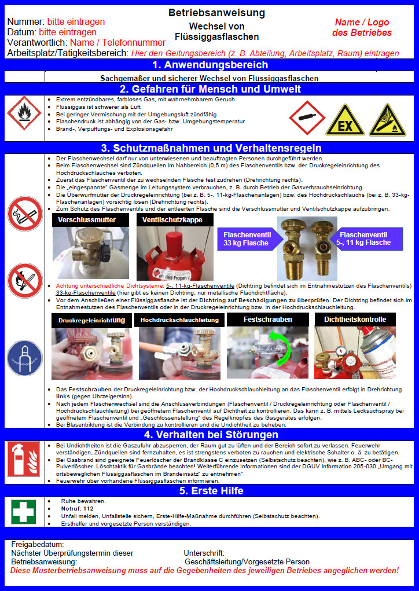
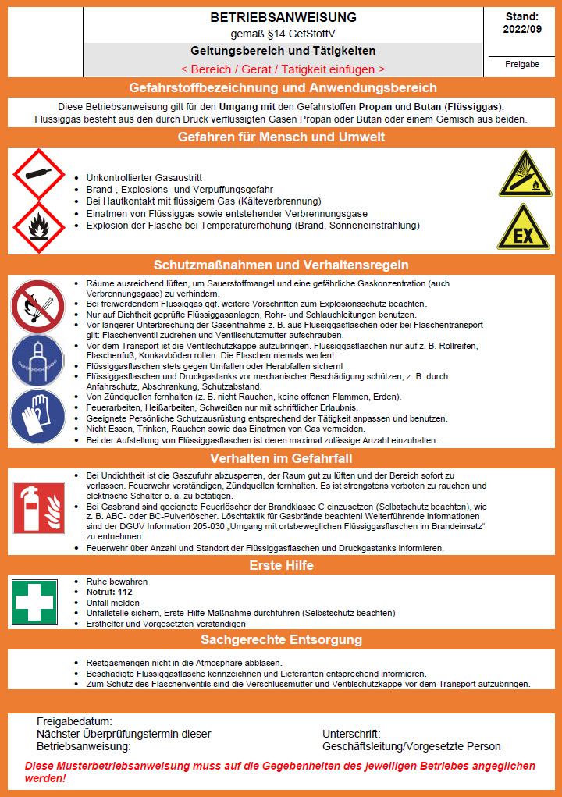

4 Grundlagen für den Arbeitsschutz
4.1 Was für alle gilt
 |
Weitere Informationen |
- Vorschriften, Regeln und Informationen der gesetzlichen Unfallversicherung:
www.dguv.de/publikationen
- Kompetenz-Netzwerk Fachbereiche der DGUV:
www.dguv.de > Webcode: d36139
- Technische Regeln zu Arbeitsschutzverordnungen:
www.baua.de
- Arbeitsschutzgesetz und -verordnungen:
www.gesetze-im-internet.de
- Datenbanken der gesetzlichen Unfallversicherung zu Bio- und Gefahrstoffen:
www.dguv.de > Webcode: d3380
|
Als Unternehmerin oder Unternehmer sind Sie für die Sicherheit und Gesundheit Ihrer Beschäftigten in Ihrem Unternehmen verantwortlich. Dazu verpflichtet Sie das Arbeitsschutzgesetz. Doch es gibt viele weitere gute Gründe, warum Arbeitssicherheit und Gesundheitsschutz in Ihrem Unternehmen wichtig sein sollten. So sind Beschäftigte, die in einer sicheren und gesunden Umgebung arbeiten, nicht nur weniger häufig krank; sie arbeiten auch engagierter, motivierter und effektiver. Mehr noch: Investitionen in den Arbeitsschutz lohnen sich für Unternehmen nachweislich auch ökonomisch.
Die gesetzliche Unfallversicherung unterstützt Sie bei der Einrichtung des Arbeitsschutzes in Ihrem Unternehmen. Der erste Schritt: Setzen Sie die grundsätzlichen Präventionsmaßnahmen um, die auf den folgenden Seiten beschrieben sind. Sie bieten Ihnen die beste Grundlage für einen gut organisierten Arbeitsschutz und stellen die Weichen für weitere wichtige Präventionsmaßnahmen in Ihrem Unternehmen.
|
Verantwortung und Aufgabenübertragung |
| Die Verantwortung für die Sicherheit und Gesundheit Ihrer Beschäftigten liegt bei Ihnen als Unternehmerin oder Unternehmer. Das heißt, Sie müssen die Arbeiten in Ihrem Betrieb so organisieren, dass eine Gefährdung für Leben und Gesundheit vermieden wird und die Belastung Ihrer Beschäftigten nicht über deren individuelle Leistungsfähigkeit hinausgeht. |
Diese Aufgabe können Sie auch schriftlich an andere zuverlässige und fachkundige Personen im Unternehmen übertragen. Sie sind jedoch dazu verpflichtet, regelmäßig zu prüfen, ob diese Personen ihre Aufgabe erfüllen. Legen Sie bei Bedarf Verbesserungsmaßnahmen fest. Spätestens nach einem Arbeitsunfall oder nach Auftreten einer Berufskrankheit müssen deren Ursachen ermittelt und die Arbeitsschutzmaßnahmen angepasst werden.
Der Betriebsrat hat im Arbeits- und Gesundheitsschutz ein vollumfängliches Mitbestimmungsrecht, wenn ein Gesetz oder eine Vorschrift einen Sachverhalt nicht abschließend regelt.
|
Beurteilung der Arbeitsbedingungen und Dokumentation (Gefährdungsbeurteilung) |
| Wenn die Gefahren für Sicherheit und Gesundheit am Arbeitsplatz nicht bekannt sind, kann sich auch niemand davor schützen. Eine der wichtigsten Aufgaben des Arbeitsschutzes ist daher die Beurteilung der Arbeitsbedingungen, auch "Gefährdungsbeurteilung" genannt. Die Grundlage hierfür bildet das Arbeitsschutzgesetz in Verbindung mit der Betriebssicherheitsverordnung (BetrSichV) und der Gefahrstoffverordnung (GefStoffV). Die Gefährdungsbeurteilung erlaubt es Ihnen, Schritt für Schritt an jedem Arbeitsplatz in Ihrem Unternehmen mögliche Gefährdungen für die Sicherheit und Gesundheit Ihrer Beschäftigten festzustellen, Verbesserungsmaßnahmen einzuführen sowie diese auf ihre Wirksamkeit hin zu überprüfen. Analysieren Sie dabei sowohl die körperlichen als auch die psychischen Belastungen Ihrer Beschäftigten. Es gilt: Gefahren müssen immer direkt an der Quelle beseitigt oder vermindert werden. Wo dies nicht vollständig möglich ist, müssen Sie Schutzmaßnahmen nach dem T-O-P-Prinzip ergreifen. Das heißt, Sie müssen zuerst technische (T), dann organisatorische (O) und erst zuletzt personenbezogene (P) Maßnahmen festlegen und durchführen. Mit der anschließenden Dokumentation der Gefährdungsbeurteilung kommen Sie nicht nur Ihrer Nachweispflicht nach, sondern erhalten auch eine zuverlässige Analyse der Arbeitsschutzmaßnahmen in Ihrem Unternehmen. So lassen sich auch Entwicklungen nachvollziehen und Erfolge aufzeigen. |
|
Unterweisung |
Ihre Beschäftigten können nur dann sicher und gesund arbeiten, wenn sie über die Gefährdungen an ihrem Arbeitsplatz sowie ihre Pflichten im Arbeitsschutz informiert sind und die erforderlichen Maßnahmen und betrieblichen Regeln kennen. Deshalb ist es wichtig, dass Ihre Beschäftigten eine Unterweisung an ihrem Arbeitsplatz erhalten. Diese kann durch Sie selbst oder eine von Ihnen bestellte zuverlässige und fachkundige Person durchgeführt werden. Setzen Sie Beschäftigte aus Zeitarbeitsunternehmen ein, müssen Sie diese so unterweisen wie Ihre eigenen Mitarbeiterinnen und Mitarbeiter. Betriebsärztin, -arzt oder Fachkraft für Arbeitssicherheit können hierbei unterstützen. Die Unterweisung muss mindestens einmal jährlich mündlich erfolgen und dokumentiert werden. Zusätzlich müssen Sie für Ihre Beschäftigten eine Unterweisung sicherstellen
- vor Aufnahme einer Tätigkeit,
- bei Zuweisung einer anderen Tätigkeit,
- bei Veränderungen im Aufgabenbereich und Veränderungen in den Arbeitsabläufen.
|
Betriebsanweisung
Sie als Unternehmerin oder Unternehmer haben nach den Bestimmungen der BetrSichV eine auf die Flüssiggasanlage bezogene Betriebsanweisung sowie eine auf den Gefahrstoff (Flüssiggas) bezogene Betriebsanweisung nach der GefStoffV zu erstellen. Die Betriebsanweisungen sind unter Berücksichtigung der örtlichen und räumlichen Bedingungen sowie der Betriebsweise in einer für Ihre Beschäftigten verständlichen Form und Sprache aufzustellen, in der alle für den sicheren Betrieb erforderlichen Angaben enthalten sein müssen. Sie sind ein Teil der Unterweisung.
Sie haben dafür zu sorgen, dass die Betriebsanweisung an geeigneter Stelle jederzeit zur Verfügung steht, d. h. Ihre Beschäftigten sollen bei Unklarheiten unmittelbaren Zugriff auf die Betriebsanweisung haben. Die Beschäftigten haben die Betriebsanweisung zu beachten.
Die Betriebsanweisung regelt das Verhalten bei der Verwendung von Flüssiggas. Sie soll Unfall- und Gesundheitsgefahren vermeiden.
Bei der Erstellung der Betriebsanweisung können Sie die vom Hersteller mitgelieferten Betriebsanleitungen verwenden. Die Betriebsanweisungen müssen regelmäßig überprüft und gegebenenfalls auf Ihre Arbeitsbedingungen vor Ort angepasst werden.
Weitere Informationen und Muster-Betriebsanweisungen finden Sie unter BGN Branchenwissen, Wissen Kompakt Flüssiggas www.bgn.de/754.

Abb. 8 Muster-Betriebsanweisung Wechsel von Flüssiggasflaschen

Abb. 9 Muster-Betriebsanweisung Umgang mit den Gefahrstoffen Propan und Butan (Flüssiggas)
 |
Gefährliche Arbeiten |
| Manche Arbeiten in Ihrem Unternehmen sind besonders gefährlich für Ihre Mitarbeiterinnen und Mitarbeiter. Sorgen Sie in solchen Fällen dafür, dass eine zuverlässige, mit der Arbeit vertraute Person die Aufsicht führt. Ist nur eine Person allein mit einer gefährlichen Arbeit betraut, so sind Sie verpflichtet, für geeignete technische oder organisatorische Schutzmaßnahmen zu sorgen, z. B. Kontrollgänge einer zweiten Person, zeitlich abgestimmte Telefon-/Funkmeldesysteme oder Personen-Notsignal-Anlagen. Ihr Unfallversicherungsträger berät Sie dazu gerne. |
|
Zugang zu Vorschriften und Regeln |
| Machen Sie die für Ihr Unternehmen relevanten Unfallverhütungsvorschriften sowie die einschlägigen staatlichen Vorschriften und Regeln an geeigneter Stelle für alle zugänglich. So sorgen Sie nicht nur dafür, dass Ihre Beschäftigten über die notwendigen Präventionsmaßnahmen informiert werden, Sie zeigen ihnen auch, dass Sie Arbeitssicherheit und Gesundheitsschutz ernst nehmen. Bei Fragen zum relevanten Regelwerk hilft Ihnen Ihr Unfallversicherungsträger weiter. |
|
Brandschutz- und Notfallmaßnahmen |
| Im Notfall müssen Sie und Ihre Beschäftigten schnell und zielgerichtet handeln können. Daher gehört die Organisation des betrieblichen Brandschutzes, aber auch die Vorbereitung auf sonstige Notfallmaßnahmen, wie zum Beispiel die geordnete Evakuierung Ihrer Arbeitsstätte, zum betrieblichen Arbeitsschutz. Lassen Sie daher so viele Beschäftigte wie möglich zu Brandschutzhelferinnen und Brandschutzhelfern ausbilden, mindestens jedoch fünf Prozent der Belegschaft. Empfehlenswert ist die Bestellung einer Mitarbeiterin oder eines Mitarbeiters zum Brandschutzbeauftragten. Das zahlt sich im Notfall aus. Damit Entstehungsbrände wirksam bekämpft werden können, müssen Sie Ihren Betrieb mit geeigneten Feuerlöscheinrichtungen, wie zum Beispiel tragbaren Feuerlöschern ausstatten und alle Mitarbeiterinnen und Mitarbeiter mit deren Benutzung durch regelmäßige Unterweisung vertraut machen. |
|
Erste Hilfe |
Die Organisation der Ersten Hilfe in Ihrem Betrieb gehört zu Ihren Grundpflichten. Unter Erste Hilfe versteht man alle Maßnahmen, die bei Unfällen, akuten Erkrankungen, Vergiftungen und sonstigen Notfällen bis zum Eintreffen des Rettungsdienstes, eines Arztes oder einer Ärztin erforderlich sind. Dazu gehört z. B.: Unfallstelle absichern, Verunglückte aus akuter Gefahr retten, Notruf veranlassen, lebensrettende Sofortmaßnahmen durchführen sowie Betroffene betreuen. Den Grundbedarf an Erste-Hilfe-Material decken der "Kleine Betriebsverbandkasten" nach DIN 13157 bzw. der "Große Betriebsverbandkasten" nach DIN 13169 ab. Zusätzlich können ergänzende Materialien aufgrund betriebsspezifischer Gefährdungen erforderlich sein.
Je nachdem wie viele Beschäftigte in Ihrem Unternehmen arbeiten, müssen Ersthelferinnen und Ersthelfer in ausreichender Anzahl zur Verfügung stehen. Diese Aufgabe können alle Beschäftigten übernehmen. Voraussetzung ist die erfolgreiche Teilnahme an einer Erste-Hilfe-Ausbildung und die regelmäßige Auffrischung alle zwei Jahre (Erste-Hilfe-Fortbildung). Die Lehrgangsgebühren werden von den Berufsgenossenschaften und Unfallkassen getragen. Beachten Sie, dass auch im Schichtbetrieb und während der Urlaubszeit genügend Ersthelferinnen und -helfer anwesend sein müssen. |
|
Wie viele Ersthelferinnen und Ersthelfer? |
| Bei 2 bis zu 20 anwesenden Versicherten |
eine Ersthelferin bzw. ein Ersthelfer |
| Bei mehr als 20 anwesenden Versicherten
|
|
| • in Verwaltungs- und Handelsbetrieben:
| 5 %,
|
| • in sonstigen Betrieben:
| 10 %,
|
| • in Kindertageseinrichtungen:
| eine Ersthelferin bzw. ein Ersthelfer je Kindergruppe,
|
| • in Hochschulen:
| 10 % der Versicherten nach § 2 Absatz 1 Nummer 1 SGB VII
|
|
Planung und Beschaffung |
Es lohnt sich, das Thema Sicherheit und Gesundheit von Anfang an in alle betrieblichen Prozesse einzubinden. Wenn Sie schon bei der Planung von Arbeitsstätten und Anlagen (z. B. Flüssiggasanlagen) sowie dem Einkauf von Arbeitsmitteln und Arbeitsstoffen an die Sicherheit und Gesundheit Ihrer Beschäftigten denken, erspart Ihnen dies (teure) Nachbesserungen.
Empfehlung: Lassen Sie sich durch eine Fachkraft für Arbeitssicherheit oder eine zur Prüfung befähigte Person (z. B. für Flüssiggasanlagen) beraten! |
|
Fremdfirmen, Lieferanten und Einsatz auf fremdem Betriebsgelände |
Auf Ihrem Betriebsgelände halten sich Fremdfirmen und Lieferanten auf? Hier können ebenfalls besondere Gefährdungen entstehen. Treffen Sie die erforderlichen Regelungen und sorgen Sie dafür, dass diese Personen die betrieblichen Arbeitsschutzregelungen Ihres Unternehmens kennen und beachten.
Arbeiten Sie bzw. Ihre Beschäftigten auf fremdem Betriebsgelände, gilt dies umgekehrt auch für Sie: Sorgen Sie auch in Sachen Arbeitssicherheit für eine ausreichende Abstimmung mit dem Unternehmen, auf dessen Betriebsgelände Sie im Einsatz sind. |
|
Integration von zeitlich befristeten Beschäftigten |
| Die Arbeitsschutzanforderungen in Ihrem Unternehmen gelten für alle Beschäftigten – auch für Mitarbeiterinnen und Mitarbeiter, die nur zeitweise in Ihrem Betrieb arbeiten, wie zum Beispiel Zeitarbeitnehmerinnen und -arbeitnehmer sowie Praktikantinnen und Praktikanten. Stellen Sie sicher, dass diese Personen ebenfalls in den betrieblichen Arbeitsschutz eingebunden sind. |
4.2 Was für das Verwenden von Flüssiggas gilt
|
Rechtliche Grundlagen |
- Richtlinie 2010/35/EU des Europäischen Parlaments und des Rates vom 16. Juni 2010 über ortsbewegliche Druckgeräte und zur Aufhebung der Richtlinien des Rates 76/767/EWG, 84/525/EWG, 84/526/EWG, 84/527/EWG und 1999/36/EG
- Richtlinie 2014/34/EU des Europäischen Parlaments und des Rates vom 26. Februar 2014 zur Harmonisierung der Rechtsvorschriften der Mitgliedstaaten für Geräte und Schutzsysteme zur bestimmungsgemäßen Verwendung in explosionsgefährdeten Bereichen
- Richtlinie 2014/68/EU des Europäischen Parlaments und des Rates vom 15. Mai 2014 zur Harmonisierung der Rechtsvorschriften der Mitgliedstaaten über die Bereitstellung von Druckgeräten auf dem Markt
- Verordnung (EG) Nr. 1272/2008 über die Einstufung, Kennzeichnung und Verpackung von Stoffen und Gemischen (CLP-VO)
- Verordnung (EU) 2016/426 "Geräte zur Verbrennung gasförmiger Brennstoffe"
- Musterfeuerungsverordnung (MFeuV)
- TRBS 1201 "Prüfungen und Kontrollen von Arbeitsmitteln und überwachungsbedürftigen Anlagen"
- TRBS 1203 "Zur Prüfung befähigte Personen"
- TRBS 2141 "Gefährdungen durch Dampf und Druck"
- TRBS 3145/TRGS 745 "Ortsbewegliche Druckgasbehälter – Füllen, Bereithalten, innerbetriebliche Beförderung, Entleeren"
- TRBS 3146/TRGS 746 "Ortsfeste Druckanlagen für Gase"
- TRBS 3151/TRGS 751 "Vermeidung von Brand-, Explosions- und Druckgefährdungen an Tankstellen und Gasfüllanlagen zur Befüllung von Landfahrzeugen"
- TRGS 201 "Einstufung und Kennzeichnung bei Tätigkeiten mit Gefahrstoffen"
- TRGS 400 "Gefährdungsbeurteilung für Tätigkeiten mit Gefahrstoffen"
- TRGS 407 "Tätigkeiten mit Gasen – Gefährdungsbeurteilung"
- TRGS 510 "Lagerung von Gefahrstoffen in ortsbeweglichen Behältern"
- TRGS 555 "Betriebsanweisung und Information der Beschäftigten"
- TRGS 720 "Gefährliche explosionsfähige Gemische – Allgemeines"
- TRGS 721 "Gefährliche explosionsfähige Gemische – Beurteilung der Explosionsgefährdung"
- TRGS 722 "Vermeidung oder Einschränkung gefährlicher explosionsfähiger Gemische"
- TRGS 800 "Brandschutzmaßnahmen"
- DGUV Regel 113-001 "Explosionsschutz-Regeln (EX-RL)" – Sammlung technischer Regeln für das Vermeiden der Gefahren durch explosionsfähige Atmosphäre mit Beispielsammlung zur Einteilung explosionsgefährdeter Bereiche in Zonen
- DGUV Grundsatz 310-003 "Prüfaufzeichnung über die Prüfung von Flüssiggasanlagen zu Brennzwecken in oder an Fahrzeugen"
- DGUV Grundsatz 310-004 "Prüfaufzeichnung über die Prüfung von Flurförderzeugen und anderen mobilen Arbeitsmitteln mit Flüssiggas-Verbrennungsmotoren"
- DGUV Grundsatz 310-005 "Prüfaufzeichnung über die Prüfung von Flüssiggasanlagen zu Brennzwecken, soweit sie aus Flüssiggasflaschen versorgt werden, oder für Flüssiggasverbrauchsanlagen zu Brennzwecken, soweit sie aus ortsfesten Druckgasbehältern versorgt werden"
- DGUV Information 205-030 "Umgang mit ortsbeweglichen Flüssiggasflaschen im Brandeinsatz"
- DGUV Information 210-001 "Beförderung von Flüssiggas mit Fahrzeugen auf der Straße"
- DGUV Information 213-085 "Lagerung von Gefahrstoffen – Antworten auf häufig gestellte Fragen"
- DGUV Information 213-106 "Explosionsschutzdokument"
- DVGW/DVFG "Technische Regel Flüssiggas" TRF 2021
- DVGW Arbeitsblatt G 600 (A) – "Technische Regel für Gasinstallation (DVGW-TRGI)
- DVGW Arbeitsblatt G 607 (A) – "Flüssiggas-Anlagen mit einem Höchstverbrauch von 1,5 kg/h in Freizeitfahrzeugen, Mobilheimen und zu Wohnzwecken in anderen Fahrzeugen; Betrieb und Prüfung"
- DVGW Arbeitsblatt G 621 – "Gasinstallationen in Laborräumen und naturwissenschaftlichen Unterrichtsräumen – Planung, Erstellung, Änderung, Instandhaltung und Betrieb"
- DVGW Arbeitsblatt G 631 (A) – "Installation von gewerblichen Gasgeräten in Anlagen für Bäckerei und Konditorei, Fleischerei, Gastronomie und Küche, Räucherei, Reifung, Trocknung sowie Wäscherei"
- VDI 2052 – "Raumlufttechnische Anlagen für Küchen" (VDI-Lüftungsanlagen)
- AD 2000 Regelwerk – Beuth Verlag GmbH
- DIN EN 14470-2 "Feuerwiderstandsfähige Lagerschränke – Teil 2: Sicherheitsschränke für Druckgasflaschen"
|
|
Weitere Informationen |
- BGN Branchenwissen, Wissen Kompakt Flüssiggas
www.bgn.de/754
- Gase unter Druck:
www.bgrci.de/gase-unter-druck/
|
|
Beurteilung der Arbeitsbedingungen und Dokumentation (Gefährdungsbeurteilung) – Zusätzliche Anforderungen beim Verwenden von Flüssiggas |
In Ihrer Gefährdungsbeurteilung müssen Sie die bei der Benutzung von Flüssiggasanlagen entstehenden flüssiggasspezifischen Gefährdungen berücksichtigen. Hierzu gehören insbesondere:
- Brand- und Explosionsgefährdungen, z. B. bei Gasaustritt während des Flaschenwechsels, durch beschädigte Schlauchleitungen, undichte Rohrleitungsverbindungen sowie fehlende oder schadhafte Flammenüberwachungen (thermoelektrische Zündsicherungen) an den Verbrauchseinrichtungen,
- das Berühren heißer Oberflächen von Verbrauchseinrichtungen und Verbrennungen an offenen Flammen,
- das Einatmen gesundheitsschädlicher Gase, z. B. bei unzureichender Be- und Entlüftung der Aufstellungsräume
sowie
- der Hautkontakt mit austretendem Flüssiggas (Flüssigphase), z. B. beim Betanken von Fahrzeugen mit Treibgasanlagen oder beim volumetrischen Füllen von Handwerkerflaschen,
- Gefährdungen bei der Beförderung von Flüssiggas, z. B. durch ungenügende Ladungssicherung.
|
In Ihrer Gefährdungsbeurteilung müssen Sie regelmäßig überprüfen, ob die von Ihnen festgelegten und durchgeführten Schutzmaßnahmen nach dem Stand der Technik eine hinreichende Risikominderung für Ihre Beschäftigten gewährleisten und die Flüssiggasanlagen weiterhin sicher verwendet werden können. Das Ergebnis der Überprüfung müssen Sie schriftlich dokumentieren.
Die Gefährdungsbeurteilung soll bereits vor der Auswahl und der Beschaffung der Arbeitsmittel beginnen, damit die geeigneten Arbeitsmittel (z. B. Verbrauchseinrichtungen und Ausrüstungsteile) für die geplante Anwendung gekauft werden. Es müssen die Einsatzbedingungen und die vorhersehbaren Beanspruchungen (örtliche Gegebenheiten, Einsatz- und Witterungsbedingungen) betrachtet werden, da davon u. a. die erforderliche sicherheitsrelevante Ausrüstung abhängig ist.
|
Im Zusammenhang mit der Erstellung Ihrer Gefährdungsbeurteilung müssen Sie die folgenden Fragen klären: |
| Die folgende Checkliste können Sie auch im Flüssiggasportal der BGN unter www.bgn.de/754 finden und ausgefüllt der Dokumentation Ihrer Gefährdungsbeurteilung beilegen. |
|
Checkliste Gefährdungsbeurteilung |
|
An welchem Ort planen Sie die Aufstellung Ihrer Flüssiggasflaschen, um Ihr Restrisiko zu minimieren?
Haben Sie hierbei die "Aufstellungspriorität" nach 5.1.3.1 Aufstellung von Flüssiggasflaschenanlagen beachtet? |
|
Erfüllen Ihre Verbrauchseinrichtungen die Bedingungen für den gewerblichen Einsatz nach
5.1.9 Betreiben von Verbrauchsanlagen (siehe auch Betriebsanleitung des Geräteherstellers)? |
|
Wo erfolgt der Einsatz der Verbrauchseinrichtungen?
Im Freien, in Räumen oder unter Erdgleiche? Siehe 5.1.3 Aufstellung von Flüssiggasanlagen. |
|
Welche Verbrauchseinrichtungen/Gasgeräte möchten Sie betreiben und welche Gesamtnennwärmebelastung ergibt sich daraus?
Siehe 5.1.12 Lüftungseinrichtungen/Abgasleitungen. |
|
Mit welcher Flaschengröße und Anzahl kann ein Dauerbetrieb der Verbrauchseinrichtungen sicher ermöglicht werden?
Haben Sie dazu die entsprechende Dimensionierung Ihrer Anlage nach 5.1.4 Anschluss von Verbrauchsanlagen errechnet bzw. sich fachkundig beraten lassen? |
|
Haben Sie dafür gesorgt, dass nur zuverlässige, mit den Tätigkeiten, den dabei auftretenden Gefährdungen und den erforderlichen Schutzmaßnahmen vertraute und entsprechend unterwiesene Beschäftigte die Flüssiggasanlage verwenden?
Siehe 4.1 Was für alle gilt! |
|
Haben Sie Maßnahmen zur Vermeidung von Brand- und Explosionsgefährdungen getroffen, z. B. Gefahrenbereiche und Zonen festgelegt?
Siehe 5.1.1 Gefahrenbereiche und Zonen und 5.1.2 Explosionsschutzdokument. |
|
Haben Sie die Anforderungen an die Be- und Entlüftung des Arbeitsraumes erfüllt, z. B. ausreichende Belüftung des Raumes, entsprechender Luftwechsel, Verwendungsverbote?
Siehe 5.1.12 Lüftungseinrichtungen/Abgasleitungen. |
|
Werden gesundheitsschädliche Konzentrationen von Verbrennungsgasen erzeugt, wie z. B. bei unzureichender Be- und Entlüftung der Arbeitsräume?
Siehe 5.1.12 Lüftungseinrichtungen/Abgasleitungen. |
|
Gibt es heiße Oberflächen an der Verbrauchseinrichtung oder offene Flammen, an denen man sich verbrennen kann?
Siehe 5.1.10 Oberflächentemperaturen. |
|
Sind Maßnahmen gegen den Hautkontakt von austretendem Flüssiggas aus der Flüssigphase z. B. beim Betanken von Flurförderzeugen getroffen worden?
Siehe 5.2.7 (8) Flurförderzeuge und andere mobile Arbeitsmittel mit Flüssiggas-Verbrennungsmotor. |
|
Haben Sie die Prüffristen für Ihre Flüssiggasanlage ermittelt und in Ihrer Gefährdungsbeurteilung dokumentiert?
Siehe 6 Prüfungen und Prüffristen von Flüssiggasanlagen zu Brennzwecken. |
|
Wer führt die Prüfungen durch?
Siehe 6 Prüfungen und Prüffristen von Flüssiggasanlagen zu Brennzwecken. |
|
Wer führt die notwendige Dichtheitskontrolle und die Inaugenscheinnahme auf offensichtliche Mängel vor der Verwendung durch?
Siehe 5.1.11 Kontrolle der Dichtheit/Feststellung von Undichtheiten. |
|
Haben Sie die notwendigen Instandhaltungsmaßnahmen für Ihre Flüssiggasanlage – unter Verwendung der Herstellerangaben – ermittelt?
Siehe 5.1.16 Instandhaltung. |
|
Sind in Ihrer Gefährdungsbeurteilung Maßnahmen für vorhersehbare Störungen enthalten?
Siehe 5.1.17 Verhalten bei Störungen. |
|
Haben Sie die Überprüfung der Gefährdungsbeurteilung unter Angabe des Datums dokumentiert? Haben Sie einen Änderungsbedarf festgestellt? Haben Sie in diesem Fall die erforderlichen Maßnahmen festgelegt und umgesetzt?
Siehe 4.1 Was für alle gilt! |
|
Haben sich Gesetze, Vorschriften, DGUV Regeln, Normen oder andere Regelwerke geändert? |
|
Prüfung und Kontrolle der Flüssiggasanlagen |
Schäden an Flüssiggasanlagen können zu Unfällen führen. Daher müssen die in Ihrem Unternehmen eingesetzten Flüssiggasanlagen regelmäßig geprüft und kontrolliert werden.
Für die Durchführung der festgelegten Prüfungen müssen Sie eine zur Prüfung befähigte Person für Flüssiggasanlagen (bP) oder eine zugelassene Überwachungsstelle (ZÜS) nach den Vorgaben der Betriebssicherheitsverordnung beauftragen (6 Prüfungen und Prüffristen von Flüssiggasanlagen zu Brennzwecken).
Anforderungen an die Qualifikation der "zur Prüfung befähigten Person" sind in der TRBS 1203 festgelegt. |
Gemäß Anhang 3 Abschnitt 2 BetrSichV sind Prüfaufzeichnungen abweichend von § 14 Abs. 7 Satz 1 BetrSichV über die gesamte Verwendungsdauer der Flüssiggasanlage aufzubewahren. Dies betrifft die Prüfaufzeichnungen gemäß den DGUV Grundsätzen 310-003, 310-004 und 310-005.
Eine Kontrolle ist vor Beginn der täglichen Arbeiten durch eine unterwiesene Mitarbeiterin oder einen unterwiesenen Mitarbeiter Ihres Betriebes durchzuführen. Offensichtliche Mängel können so schnell entdeckt werden.